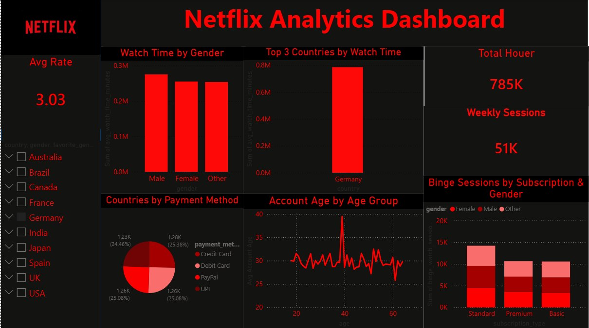
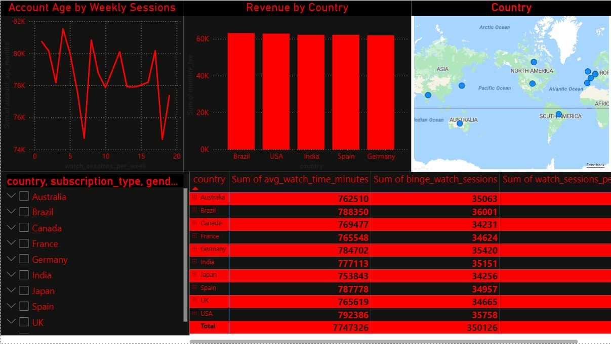
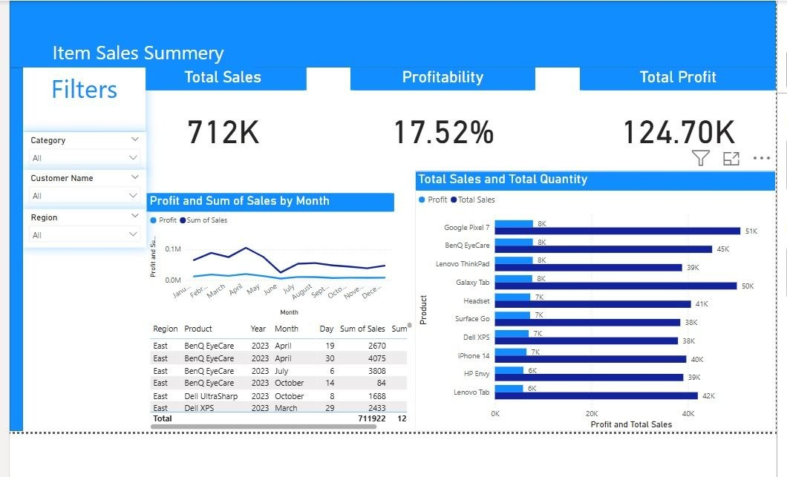
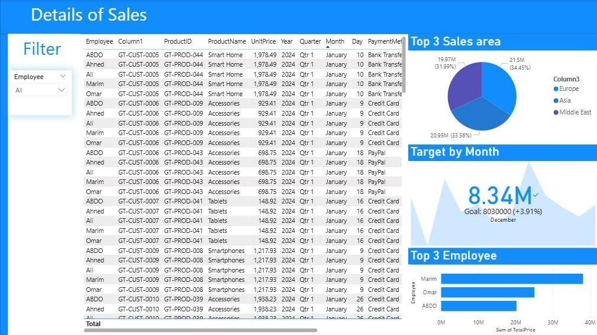
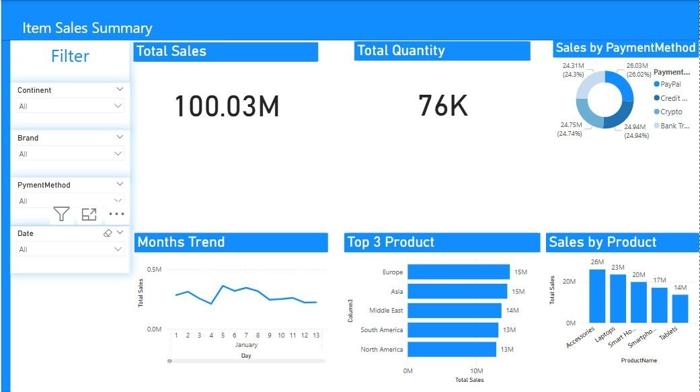
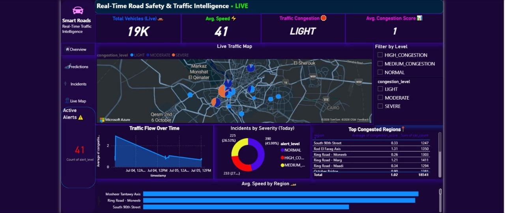
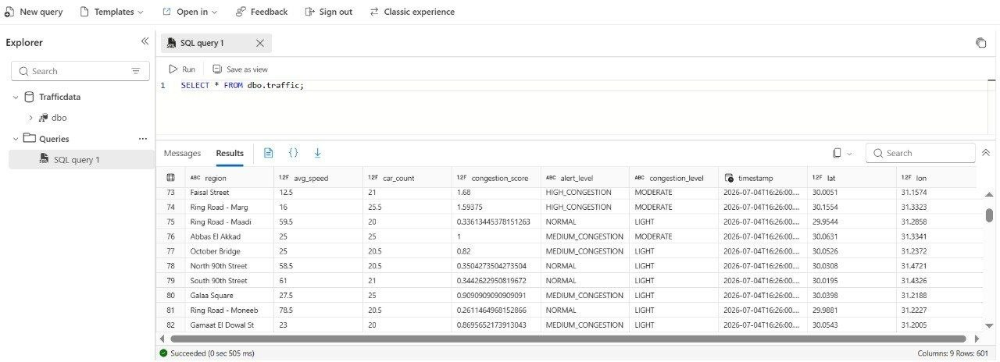
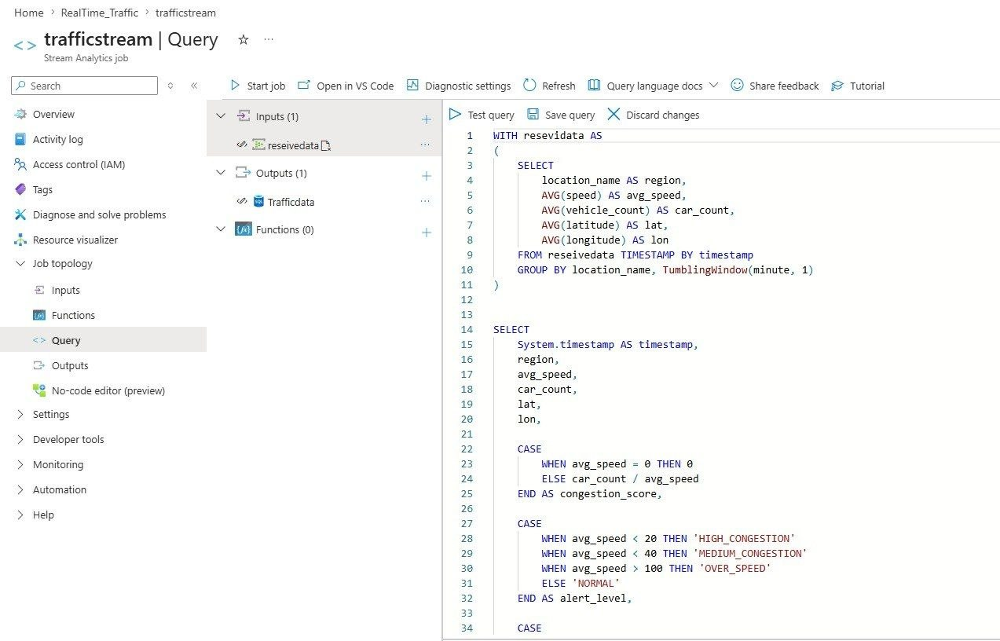
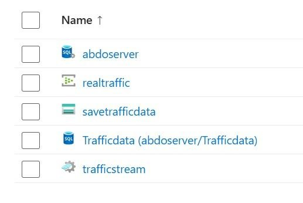

Abdelhaq Ahmed
AI & Data Science - Microsoft Data Engineer
I start by understanding how systems work, then analyze their data to produce clear outcomes that support practical, real-world decisions.

I start by understanding how systems work, then analyze their data to produce clear outcomes that support practical, real-world decisions.
From a young age, I’ve always been curious about how technology works and how code can
turn ideas into real solutions.
This curiosity gradually grew into a strong passion for Computer Science, which led me to
pursue my studies at El Shorouk Academy.
Over time, I discovered my interest in Data Analysis and Data Visualization — I enjoy working
with data, finding patterns, and transforming numbers into meaningful insights through
dashboards and visual reports.
Alongside that, my fascination with Artificial Intelligence pushed me to continuously learn and
build a solid foundation in Machine Learning.
I believe in consistent learning and daily improvement. Every project, course, and challenge I
take on helps me grow technically and think more analytically.
My goal is to apply what I learn to real-world problems, gain hands-on experience, and build
impactful solutions in the Data and AI fields.
Focusing on computer science fundamentals, software engineering principles, data structures, algorithms, object-oriented programming, and machine learning foundations to build a robust academic and practical engineering base.
Intensive technical pipeline designed for building scalable data engineering workflows, handling large datasets, and deploying machine learning models in production.


Built an end-to-end Power BI dashboard by cleaning and transforming data with Power Query, creating a data model, writing DAX measures, and designing interactive reports to analyze Netflix user behavior and performance.



Built an interactive Sales Analysis Dashboard using Microsoft Power BI to analyze business sales data. Integrated multiple datasets including Customers, Employees, Orders, and Products into a unified data model. Created KPIs such as Total Sales and Total Quantity, developed interactive visualizations to identify top-selling products and monthly sales trends, and added dynamic filters for customer, product, and payment method analysis. The dashboard provides actionable insights to support business decision-making.




Designed and implemented an end-to-end real-time traffic analytics pipeline using Microsoft Azure. The system collects live traffic data from the TomTom API, streams it through Azure Event Hub, processes it with Azure Stream Analytics, stores the results in Azure SQL Database, applies Machine Learning models to predict traffic congestion, and visualizes real-time insights through interactive Streamlit and Power BI dashboards. The solution also includes automated traffic alerts, enabling proactive traffic monitoring and smarter traffic management.